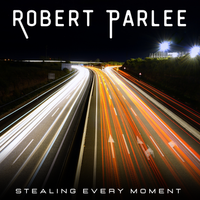

Historical Catalog
Isle of Man and Lonesome Romeos
Robert’s discography includes major-label work with Isle of Man and Lonesome Romeos, plus soundtrack credits connected to Teen Wolf Too, Major League, and Wedding Bell Blues.
Music
Robert’s current solo album brings together songs written across decades and recorded in Nashville with producer Travis Allen.

Featured Album
A 10-track collection from Robert Owen Parlee’s current singer-songwriter chapter.
Historical Catalog
Robert’s discography includes major-label work with Isle of Man and Lonesome Romeos, plus soundtrack credits connected to Teen Wolf Too, Major League, and Wedding Bell Blues.
Platform Strategy
Spotify, Apple Music, Amazon Music, and YouTube Music remain high-value distribution targets. The current site already gives us OohYeah and YouTube as live paths.